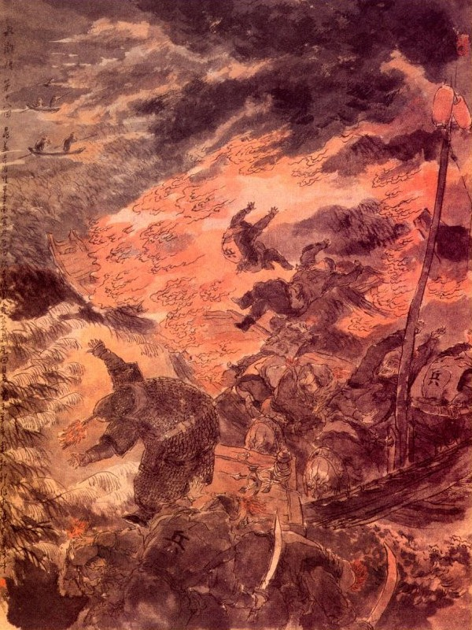
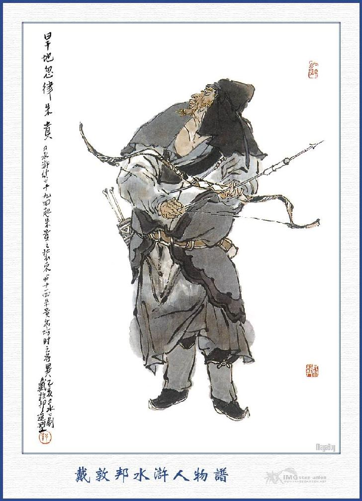
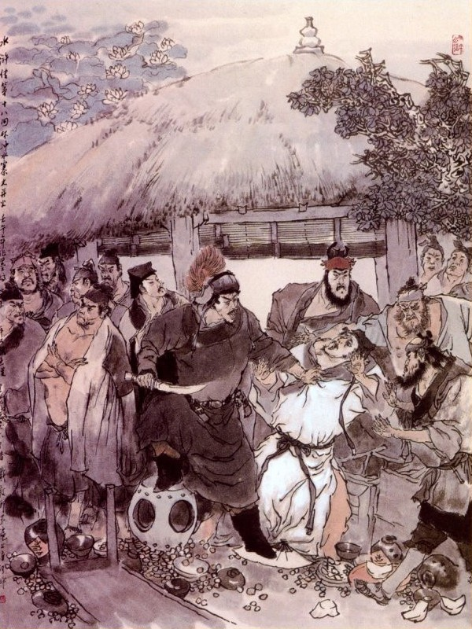

Khi ấy Hà Quan Sát lĩnh lời Tri Phủ quay xuống phòng cơ mật, để thương nghị với mọi người. Có một người công sai, bảo với Hà Đào rằng:
- Thôn Thạch Kiệt gần kề với vũng Lương Sơn là một nơi bến nước mênh mông cỏ lau rậm rạp, nếu không có Đại đội quan quân thì ai dám đến đây mà bắt được cướp?
Hà Đào nghe chúng nói, mới nghĩ ra là phải, liền quay lên bẩm với Tri Phủ rằng:
- Khoảng hồ ở thôn Thạch Kiệt, chính là tiếp giáp với Lương Sơn, xung quanh toàn thị vũng hồ sâu rộng, lau cỏ um tùm, ngày thường vẫn hay cướp bóc người ta ở đó. Nay lại thêm có một bọn cường nhân mới đến, nếu không có Đại đội quân mã kéo đi thì khó lòng mà bắt được?
Tri Phủ truyền rằng:
- Nếu vậy thì ta cho mấy viên tuần giang tinh giỏi điểm lấy hơn trăm quân mã, cùng đi với người có được không?
Hà Quan Sát vâng lời, xuống phòng cơ mật, gọi mấy tên công sai, họn lấy hơn trăm người rồi sắp sửa lấy các đồ khí giới để sáng mai ra đi. Sáng hôm sau mấy tên Tuần giang lĩnh công văn quan Phủ Tế Châu rồi điểm năm trăm quân mã cùng với Hà Quan Sát và đám công sai cùng đi đến thôn Thạch Kiệt.
Nói về Tiều Cái, Công Tôn Thắng đêm hôm ấy, đốt bỏ trang viện rồi đi vội vàng để trốn sang thôn Thạch Kiệt. Khi tới nửa đường đã gặp ba anh em họ Nguyễn, đều mang khí giới ra đón ở đó, mấy người cùng nhau kéo về tạm trú ở nhà Nguyễn Tiểu Ngũ.
Bấy giờ Nguyễn Tiểu Nhị đã cho vợ con vào ở tất cả phía trong hồ rồi bảy người cùng bàn kế với nhau để nhập bọn Lương Sơn. Ngô Dụng nói:
- Hiện nay ở ngoài đường cái, có Chu Quý mở cửa hàng bán rượu, để chiêu nạp hảo hán bốn phương, nếu chúng ta muốn nhập bọn thì phải đến nói với anh ấy trước. Vậy ta hãy đem các đồ sản vật xếp sẵn xuống thuyền rồi kiếm cái gì, đưa cho Chu Quý, để hắn dẫn ta lên.
Đương khi bàn soạn với nhau thì bỗng thấy mấy người đánh cá chạy đến báo rằng:
- Hiện có quan quân kéo đến để truy nã.
Tiều Cái nghe báo, đứng dậy bảo với anh em rằng:
- Bọn họ đã đến thì chúng ta đừng chạy nữa.
Nguyễn Tiểu Nhị nói:
- Các ông đừng sợ, ta sẽ có cách đối phó lại với họ, cứ cho một nửa xuống nước, còn một nửa thì ta chém chết cho rảnh.
Công Tôn Thắng nói:
- Các ông cứ lặng im, để bần đạo thử chút tài mọn cho các ông xem.
Tiều Cái bảo với Lưu Đường rằng:
- Bây giờ bác cùng với Học Cứu tiên sinh mang tất cả tài vật và người nhà, xếp xuống thuyền rồi đi đến bên tả con đường Lý Gia để đợi chúng tôi, chúng tôi liệu thế nào rồi sẽ đến sau.
Nguyễn Tiểu Nhị liền lấy hai con thuyền rồi đem mẹ và người nhà, cùng các tài vật xếp xuống thuyền, để Ngô Dụng, Lưu Đường mỗi người áp một thuyền rồi sai bảy tám tên phường chài, chèo thuyền đến bên tả con đường Lý Gia. Lại dặn Nguyễn Tiểu Ngũ và Nguyễn Tiểu Thất, lái một chiếc thuyền con, cứ theo cách thế, để đối địch với quan quân. Bên kia bọn Hà Đào với Tuần giang cùng tụi quân mã đi gần đến thôn Thạch Kiệt, thấy ở bến đó có bao nhiêu thuyền để đó đều cướp lấy cả. Rồi sai bọn quân lính thiện nghề thủy thủ nhảy xuống thuyền để tiến đánh đường thủy, còn bọn mã binh thì tiến mặt đường bộ. Trên ngựa dưới thuyền, thủy bộ đều tiến thẳng kéo đến Nguyễn gia trang. Khi tới nơi quan quân hò reo vang động rồi cùng kéo nhau vào thì chỉ thấy cái xác nhà và mấy thứ đồ dùng nặng nề bỏ đó, Hà Đào truyền bắt những bạn chài gần đấy đến để hỏi; thì đều nói rằng:
- Hai anh em nhà Nguyễn Tiểu Ngũ và Nguyễn Tiểu Thất đều ở vào phía trong hồ cả.
Hà Đào bàn với Tuần giang rằng:
- Phía trong hồ toàn thị kênh ngang ngòi tắt, đường lối tào lạp, vả chăng nước rộng vũng nhiều, nông sâu chưa biết, nên đến đấy mà chia nhau từng ngã để tìm thì lỡ khi mắc kế gian nhân tất là nguy hiểm. Vậy ta nên để cả ngựa trong thôn này, cho người ở đây coi giữ rồi xuống tất cả dưới thuyền mà đi mới được.
Nói đoạn Hà Quan Sát cùng Tuần Giang và tụi quân lính đều nhất tề xuống thuyền cả. Bấy giờ có tới hơn trăm con thuyền, cái thì chèo, cái thì chở, thẳng vào phía trong hồ, để tìm nhà anh em Nguyễn Tiểu Ngũ. Thuyền đi được độ năm sáu dặm, trên mặt nước, chợt thấy trong đám lau lách có tiếng người hát. Chúng liền dừng thuyền lại để nghe thì thấy tiếng hát véo von rằng:
Quanh năm đánh cá vũng hồ trong.
Lúa má đay gai chẳng thiết trồng.
Giết hết quan tham cùng lại nhũng,
Báo đền non nước dốc lòng trung.
Hà Quan Sát cùng mọi người nghe thấy, đều giật mình kinh sợ mà ngơ ngác nhìn nhau. Dần dần thì thấy một người hiện ra đứng trên con thuyền, vừa chèo vừa lái ở đằng xa đi đến. Có người nhận biết trỏ bảo với chúng rằng: - Người ấy chính là Nguyễn Tiểu Ngũ, liền giơ tay vẫy một cái, chúng đều hết sức cầm đồ binh khí mà sấn thuyền đến đuổi. Nguyễn Tiểu Ngũ thấy vậy cười mà nói rằng:
- Chúng bây là quân giặc, tàn dân hại nước, lại còn dám cả gan tìm đến đây làm gì? Bây muốn vuốt râu hùm chơi hay sao?
Trong bọn Hà Đào có nhiều người giỏi nghề cung tên, liền giơ cung lấy tên ra, nhất tề trỏ vào Nguyễn Tiểu Ngũ để bắn. Nguyễn Tiểu Ngũ thấy bên kia quân bắn, liền cầm chèo nhảy tót xuống nước trốn đi mất. Quân chúng đuổi đến nơi đã không thấy gì nữa, liền cùng nhau giong thuyền đi tìm.
Đi được vài quãng kênh, lại nghe tiếng còi huýt ở trong đám lau lách. Chúng bèn dàn thuyền ra để xem thì thấy có hai người chèo một con thuyền trên mũi thuyền có một người đầu đội nón lá, mình khoác áo tơi, tay cầm cây gậy nhọn đầu như quản bút, miệng véo von rằng:
Ta đây sinh trưởng ở thôn này,
Bẩm tính xưa nay thích giết người.
Hãy chém Hà Đào tuần giản trước,
Kinh sư đem hiến Triệu Vương chơi.
Hà Quan Sát cùng mọi người nghe thấy, đều ngạc nhiên kinh lạ. Sau có người nhận biết trỏ mà bảo rằng:
- Anh ấy là Nguyễn Tiểu Thất đó.
Hà Đào liền quát quân chúng rằng:
- Bây hết sức xông lên, bắt thằng giặc ấy cho ta, chớ để cho nó chạy mới được.
Nguyễn Tiểu Thất nghe nói cười rằng:
- Quân thối thây này!
Nói đoạn cầm gậy trỏ một cái, thuyền đã ngoắt vào trong kênh mất. Làm chúng hết sức dong thuyền đuổi theo, con thuyền của Nguyễn Tiểu Thất vẫn đi vun vút vào trong kênh con mà miệng vẫn còn huýt còi làm hiệu. Thuyền quân đuổi mãi vào tới trong, thấy bến nước hẹp dần mãi đi, Hà Đào liền bắt quân sĩ dừng thuyền mà kéo nhau lên bộ. Khi lên đến gần bờ thấy bốn mặt mênh mang, toàn là lau lách, không có một lối nào để len chân đi được. Trong bụng Hà Đào lấy làm nghi hoặc, gọi hỏi những người ở thôn ấy thì chúng đều nói rằng:
- Chúng tôi tuy ở đây, nhưng cũng không biết rằng chỗ này đường lối ra thế nào cả.
Hà Đào nghe nói lại càng kinh lạ, bèn sai hai chiếc thuyền, mỗi đem vài ba người công sai chèo đi để thăm đường lối. Hai thuyền đi một lúc lâu không thấy trở về. Hà Đào tức giận mà rằng:
- Mấy thằng ấy sai đi không được việc gì cả.
Nói đoạn lại năm tên công sai thạo việc khác, chở hai chiếc thuyền nữa, đi thám thính xem. Được một hồi lâu, lại không thấy tăm hơi gì cả. Hà Đào lẩm bẩm gắt lên rằng:
- Mấy thằng công sai ấy, xưa nay vẫn nhanh nhẹn mà sao bây giờ lờ mờ như thế? Đi từ bao lâu đến giờ cũng không thấy một thằng nào về cả? Bấy giờ trong đám quan quân ở đó, không ai hiểu biết đầu đuôi ra sao mà mặt trời thì nghe chừng đã gần tối. Hà Đào lấy làm sốt ruột nghĩ một mình rằng: "Bây giờ đứng mãi đây thì rồi làm ra thế nào? Bất nhược ta phải thân chinh đi mà xem mới được". Nghĩ đoạn sai chọn một chiếc thuyền nhẹ nhàng cắt mấy tên công sai lão luyện đều cầm theo khí giới rồi Hà Đào xuống ngồi ở mũi thuyền bắt năm sáu tay chèo thực nhanh, đi vào các chỗ lau lách để thám thính.
Bây giờ mặt trời đã xế non tây, thuyền đi ước được năm sáu dặm nước, đến một nơi gần bến, thấy có một người vác cái cuốc đương ở đâu chạy lại, Hà Đào liền hỏi rằng:
- Anh chàng kia! Anh là người nào? Ở đây là chỗ nào?
Người kia nghe hỏi đứng dừng lại mà đáp rằng:
- Tôi là người làng ở đây, chỗ này gọi là chỗ Đoạn Đầu Cảng, hết lối đi rồi.
Hà Đào hỏi:
- Anh có thấy hai chiếc thuyền đi qua đây không?
Người kia nói:
- Có phải là thuyền đi bắt Nguyễn Tiểu Ngũ? Ấy họ đương đánh nhau ở rừng Điếu Lâm, về phía trước mặt kia.
- Đây đến đấy có xa không?
- Ở ngay trước mặt đây kia thôi.
Hà Đào nghe nói liền sai cắm thuyền lại, bắt mấy tên công sai cầm khí giới đi lên bờ để cứu đám kia. Mấy tên công sai vừa bước lên bờ thì anh chàng vác cuốc kia giơ thẳng cánh, cuốc cho mỗi tên công sai một cuốc, đứt phăng đầu ra mà lăn xuống nước. Mấy tên công sai còn ở thuyền thấy vậy, hoảng hốt toan nhảy chạy thì bỗng đâu anh chàng vác cuốc trên bờ đã nhảy tót xuống thuyền mà tặng cho mỗi tên công sai một nhát cuốc nữa chết lăn ra cả đó. Bấy giờ Hà Đào bị một người kéo xuống nước rồi ôm thốc lên bờ cởi đai nịt ra mà trói chặt vào rồi đến khi trông mặt mới biết người ấy chính là Nguyễn Tiểu Thất mà người vác cuốc chính là Nguyễn Tiểu Nhị. Hai anh em Nguyễn Tiểu Thất, Nguyễn Tiểu Nhị cùng chạy đến trỏ mặt Hà Đào mà mắng rằng:
- Ba anh em ông xưa nay chỉ thích giết người đốt nhà, phỏng mày nghĩ hơi sức được bao nhiêu mà dám cả gan dẫn quan quân vào bắt lũ chúng ông?
Hà Đào nói:
- Hảo hán ơi! Chúng tôi là vâng lệnh quan trên, không đi không được, nào có phải tự mình dám cả gan đến đây mà bắt hảo hán đâu? Xin hảo hán thương tôi còn chút mẹ già tám mươi tuổi đầu, không ai nuôi nấng mà tha tính mạng cho tôi.
Anh em họ Nguyễn bảo nhau trói tròn lại bỏ xuống sạp thuyền rồi vất những xác đứa kia xuống nước, đoạn rồi thổi mấy tiếng khẩu hiệu thì thấy trong đám lau lách có tới bốn năm anh chài trổ ra cùng nhảy lên thuyền cả, còn Nguyễn Tiểu Ngũ, Nguyễn Tiểu Thất cũng mỗi người cưỡi một chiếc thuyền con mà cùng ra đi.
Bấy giờ vào khoảng giữa canh một, bọn Tuần giảng cùng quân lính mong mãi không thấy Hà Quan Sát về thì ai nấy ngơ ngác không hiểu ra sao, đành phải ngồi bó cánh trên thuyền mà nghỉ mát.
Chợt đâu có một trận quái phong ở sau lưng thổi lại làm cho dây buộc thuyền đều bị đứt tất cả. Chúng đương kinh sợ hãi hùng, không biết đường thi thố thì bỗng lại nghe thấy hiệu còi thổi ở phía sau rồi có một vầng lửa sáng ở trong đám lau lách đi ra. Đám quan bảo nhau rằng: Phen này không còn cách chi mà sống được nữa! Khi đó vừa một trăm chiếc thuyền vừa lớn vừa nhỏ, đều bị gió đánh lật lộn nghiêng trành không sao giữ được rồi thấy đống lửa kia vẫn cứ lù lù tiến đến trước mặt.

Nguyên đó là một đoàn thuyền con buộc hai cái làm một, trên để toàn cỏ khô lau héo đốt lửa cháy dần dật rồi buông thuận chiều gió mà trôi đến đó. Hơn một trăm chiếc thuyền của đám quân lính phần thì đậu liền khít với nhau, phần thì kênh nước hẹp hòi, không có chỗ để tránh, thành ra mười mấy chiếc thuyền lớn ở đầu bị lửa xông vào đốt cháy. Dưới đáy nước lại có người kéo ngầm thuyền lửa sấn vào đốt phá thuyền quân làm cho các quân lính trên thuyền, đều nhao nhao nhảy lên bờ chạy trốn. Dè đâu bước lên đến bờ lại toàn thị khóm lau vũng lách không có lối đi, đằng trước cũng thấy lửa cháy đùng đùng trên khóm lau cháy xuống gió to ngọn lửa càng to, đám quân lính không có chỗ nào lẩn lút, đành phải nhảy xuống những chỗ vũng lầy để đứng. Trong đám hoả quang rực rỡ, thấy có một chiếc thuyền con đi vun vút tới nơi, đằng lái thuyền đứng chèo, đằng mũi thuyền có một tiên sinh ngồi, tay cầm một thanh kiếm sáng loáng miệng quát lên rằng:
- Đừng để cho một thằng nào bên đông chạy thoát.
Bọn quân lính đứng trong đám bùn lầy, nghe vừa dứt lời thì thấy bờ lau bên đông có hai người dẫn bốn năm anh chài cầm đao thương sáng loáng chạy đến bờ lau, bên tây cũng có hai người dẫn bốn năm anh phường chài tay cầm phi ngư câu sáng quắt chạy ra. Hai bên đổ xô vào, vớ được anh nào là chém anh ấy, chỉ một lúc tụi quân binh chết cả trong đám bùn lầy, không còn anh nào sống sót. Than ơi!
Vì đâu cho chúng lầm than
Tội nào giết hết quan tham chưa đành!
Nguyên hai người bên đông là Tiều Cái, Nguyễn Tiểu Ngũ, hai người bên tây là Nguyễn Tiểu Nhị, Nguyễn Tiểu Thất và một tiên sinh ngồi trên mũi thuyền thì là Công Tôn Thắng ngồi để hô gió. Bấy giờ năm vị hảo hán dẫn mười mấy tên chài lưới ở thôn trang, chém hết quân binh trong vũng lầy bờ cỏ, duy còn một mình Hà Quan Sát là vẫn trói cuốn tròn như cái bánh mà vất ở trong khoang thuyền. Nguyễn Tiểu Nhị xách trùng làm hại dân sự ở Tế Châu, lẽ ra chúng tao xé xác làm muôn mảnh, nhưng nay hãy tha cho, để về báo với thằng giặc già Tri Phủ Tế Châu rằng:
- Chúng tao là ba tay anh hùng họ Nguyễn ở thôn Thạch Kiệt và Đông Khê Tiều Cái Thiên Vương, không ghẹo gì nó mà không đến vay mượn lương thảo gì trong thành, nó đừng đến đây mà mua cái chết nhé. Nếu mà nho nhoe với chúng tao thì không cứ là một thằng Tri Phủ cỏn con cho ngay đến lão Xài Thái Sư đến đây nữa, gọi là ta đánh cho vài ba mươi cái khoét thịt vào đã. Bây giờ tao tha cho mà về, chớ đến đây nữa mà phải truyền cho chúng nó đừng mơ tưởng hoài công! Đây không có đường cái lớn, để tao đưa ra ngoài đường cái cho mà đi.
Bấy giờ Tiểu Thất lấy một con thuyền nhẹ nhàng kéo Hà Đào xuống chở ra gần đường cái mà quát lên rằng:
- Cứ đi thẳng đây khắc tìm thấy lối đường, còn đám kia đã giết hết cả rồi. Bây giờ thả cho mày được về tử tế thế này, chắc là thằng giặc già Tri Phủ nó lại cười ta, vậy ta hãy lưu lại để cho nó biết. Nói đoạn rút dao găm ở bên mình ra xẻo hai tai Hà Đào, máu chảy đầm đìa lênh láng, đoạn rồi lau đao cởi trói vất Hà Đào lên bờ mà đi.
Hà Đào được thoát tính mạng kinh sợ hãi hùng, vội vàng tìm đường cút thẳng về Tế Châu. Khi đó Tiều Cái, Công Tôn Thắng cùng ba anh em họ Nguyễn với tụi phường chài cùng lên thuyền, đến bên đường Lý Gia để tìm Ngô Dụng, Lưu Đường họp vào làm một. Ngô Dụng hỏi đến việc cự quan quân, Tiều Cái liền đem đầu đuôi kể hết cho nghe, ai nấy đều vui mừng hớn hở. Đoạn rồi lại chỉnh đốn thuyền bè, cùng nhau kéo đến hàng rượu Hãn Địa Hốt Luật Chu Quý. Khi tới nơi Ngô Dụng đem đầu đuôi chuyện mình kể cho Chu Quý nghe và nói để xin vào nhập đảng. Chu Quý thấy vậy cả mừng, mời các người lên, chào hỏi xong rồi, đón cả vào trong nhà để thết rượu.

CHU QUÝ
Đoạn rồi Chu Quý ra thủy đình lấy một mũi tên bắn vào vũng lau để ra hiệu. Được một lát đã thấy tên tiểu lâu la chở một con thuyền ra. Chu Quý vội vàng viết một phong thư thuật chuyện và kể tên họ mấy vị hào kiệt định lên nhập đảng, giao cho tiểu lâu la đem về trình trước cho sơn trại biết rồi nhất diện giết dê khoản đãi mọi người suốt đêm hôm ấy. Sáng hôm sau, Chu Quý cho gọi một chiếc thuyền lớn mời mấy vị hảo hán xuống thuyền rồi cho cả chiếc thuyền của Tiều Cái đem đến cùng trở về sơn trại. Khi đến một chỗ kênh nước kia chợt thấy trên bờ có tiếng thanh la kêu rồi có bảy tám tên lâu la đánh bốn con thuyền tuần tiễu đi qua. Khi trông thấy Chu Quý thì đám lâu la trên thuyền kia đều cúi chào Chu Quý rồi lại lái thuyền vút đi trước.
Chu Quý cùng bọn Tiều Cái đi vào đến bến Kim Sa thì cùng nhau kéo lên bờ duy để mấy người nhà và mười mấy tên phường chài đợi lại ở thuyền. Bấy giờ có mấy tên tiểu lâu la xuống núi tiếp đón lên ải. Vương Luân cùng mọi người Đầu Lĩnh đều ra quan ải để nghinh tiếp. Bọn Tiều Cái thấy vậy vội vàng thi lễ để chào. Vương Luân đáp lễ lại mà nói rằng:
- Vương Luân tôi được nghe tiếng Tiều Thiên Vương đã lâu, như sét đánh bên tai, nay được ngài hạ cố đến đây thì thực là may quá!
Tiều Cái nói:
- Tiều mỗ tôi là một người vô học tính khí thô mãng, ngày nay tự biết vụng về kém dốt, cam tâm đến đây làm một tên tiểu tốt ở trướng tiền, xin ngài rộng lượng bao dung thì lấy làm may mắn.
Vương Luân đáp rằng:
- Ngài dạy làm gì thế, hãy xin mời vào tiểu trại rồi ta sẽ bàn định về sau.
Nói đoạn cùng các Đầu Lĩnh dẫn đám Tiều Cái đi lên sơn trại.
Khi tới Tụ Nghĩa Sảnh, Vương Luân mời bọn Tiều Cái bảy người ngồi bên phía hữu, còn các Đầu Lĩnh cùng Vương Luân thì ngồi bên phía tả, đoạn rồi nhạc công đánh bài nhạc của sơn trại để chào mừng và sai một tên tiểu Đầu Mục ra thuyền để tiếp đón các người nhà vào khách quán yên nghỉ. Hôm đó trong sơn trại giết mấy con bò, mười mấy con gà và năm con lợn, tiệc bày sang trọng trống phách vang lừng, rất là vui vẻ. Khi tiệc đến nửa chừng, Tiều Cái liền đem tâm sự từ đầu đến cuối giải bầy cho Vương Luân nghe. Vương Luân nghe đoạn kinh hãi hồi lâu, trong bụng ngần ngừ không biết trả lời ra sao, chỉ ầm ừ ứng đáp sao cho xong câu chuyện. Đến khi tan tiệc các đầu lĩnh đưa bọn Tiều Cái xuống khách phòng ở ngoài quan ải để nghỉ và cắt hầu hạ cẩn thận. Trong bụng Tiều Cái lấy làm mừng rỡ, bảo với Ngô Dụng cùng mọi người rằng:
- Chúng ta làm nên những tội ngập trời. Nếu không có Vương Đầu Lĩnh thương yêu mà để cho ở đây như thế thì có lẽ chúng ta cũng nguy lắm nhỉ?
Ngô Dụng nghe nói chỉ cười nhạt mà không nói sao cả.
Tiều Cái thấy vậy liền hỏi rằng:
- Làm sao tiên sinh lại cười nhạt hoặc có điều chi, xin tiên sinh nói cho tôi biết?
Ngô Dụng đáp rằng:
- Tính bác ngay thẳng, vẫn tưởng là Vương Luân chịu lưu chúng ta ở đây hay sao? Bác không biết ruột hắn, chứ bác lại không xem nhan sắc và cử động của hắn à?
- Nhan sắc cử chỉ của hắn ra sao?
- Bác không biết, lúc mới đầu dự tiệc hắn còn chuyện trò với bác ra dáng thân tình, về sau bác kể chuyện ra những là giết đám quân quan, buông tha Hà Đào, cùng là Nguyễn Thị tam hùng, mười phần hào kiệt thì bấy giờ hắn biến ngay sắc mặt đi, ngoài miệng tuy ứng đáp nói cười mà trong lòng thì thực khác hẳn. Nếu quả hắn có bụng lưu chúng ta ở đây thì bấy giờ đã định vị thứ rồi mới phải. Việc ấy dẫu đến Đỗ Thiên, Tống Vạn cũng xin tùy theo đáp ứng chứ không hiểu được thâm ý của Vương Luân, duy có một anh chàng Lâm Xung là ngày trước đã làm qua Giáo Đầu ở kinh sư cũng đã hơi hiểu việc, nay bất đắc dĩ phải ngồi vào bậc ghế thứ tư thì trong lòng vẫn hậm hực bất bình, xem như cách nói chuyện với bác buổi sáng thì đủ biết. Tôi xem anh ta thực là có ý trở mặt với Vương Luân; để tôi thuyết cho mấy câu, khắc là họ tính ngay lập tức.
Bấy giờ Tiều Cái mới tỉnh biết, liền bảo Ngô Dụng rằng:
- Thôi, trăm sự nhờ ở kế sách của tiên sinh cả.
Cho hay quân tử xem người,
Xem từ tiếng nói câu cười xem sao?
Dẫu cho khôn khéo trăm chiều,
Như trong thấy ruột lẽ nào dấu xong!
Sáng hôm sau bỗng thấy người nói có Lâm Xung Giáo Đầu đến chơi. Ngô Dụng liền bảo với Tiều Cái rằng:
- Nếu người ấy đến đây thì tất là trúng kế ta hẳn!
Nói đoạn bảy người vội ra đón Lâm Xung cùng vào phòng khách nói chuyện. Ngô Dụng đến trước mặt Lâm Xung mà nói rằng:
- Hôm qua được các ngài có lòng hậu đãi, chúng tôi lấy làm cảm tạ vô cùng.
Lâm Xung nói:
- Tôi thực là lỗi phép với các ngài, nhưng ngặt vì nếu có bụng tử tế mà không có quyền thì cũng không làm sao được, xin các ngài thứ lỗi cho.
Ngô Dụng nói:
- Chúng tôi tuy không ra gì, nhưng cũng không phải là loài thảo mộc, lẽ nào lại không biết tấm lòng tử tế biệt nhỡn của ngài, thực là cảm ơn vô hạn.
Đoạn rồi Tiều Cái mời Lâm Xung ngồi ghế trên. Lâm Xung nhất định không nghe, nhường Tiều Cái ngồi trên rồi tự mình ngồi cánh đuôi, còn Ngô Dụng và sáu người kia ngồi một dẫy ở dưới nữa. Tiều Cái nói với Lâm Xung rằng:
- Tôi được nghe tiếng Giáo Đầu đã lâu không ngờ nay lại được gặp ở đây!
Lâm Xung nói:
- Tôi khi còn ở kinh sư chơi với anh em không hề có một chút gì là sơ suất, ngày nay được gặp ngài đây thật là không thoả lòng chút nào, cho nên tôi phải đến đây để xin lỗi với ngài.
Tiều Cái tạ lại rằng:
- Xin cảm tấm lòng quý báu của ngài.
Ngô Dụng lại hỏi Lâm Xung rằng:
- Ngày trước tôi được nghe tiếng Đầu Lĩnh còn ở Đông Kinh kể biết bao phần hào kiệt, thế mà không biết vì sao bị Cao Cầu hãm hại phải sang ở đất Thương Châu? Sau tôi nghe nói ở Thương Châu lại bị chúng lập mưu đốt mất thảo trường rồi không biết ai đưa Đầu Lĩnh đến sơn trại ở đây từ bao giờ như vậy?
Lâm Xung thở dài mà rằng:
- Nói đến thằng Cao Cầu nó hãm hại tôi thì lại kinh dựng tóc gáy lên, không biết bao giờ trả thù cho được! Còn việc tôi đem thân đến lẩn lút ở đây là nhờ ở Sài Đại Quan Nhân tiến cử giúp cho đấy, ngài ạ!
- Sài Đại Quan Nhân có phải bọn giang hồ vẫn kêu là Tiểu Toàn Phong Sài Tiến đó phải không?
- Chính người ấy đấy.
Tiều Cái nói:
- Tôi cũng nghe tiếng ông ta là người trọng nghĩa khinh tài hay kết nạp bọn hào kiệt bốn phương là dòng dõi Đại Chu Hoàng Đế khi xưa, nhưng tôi chưa gặp được bao giờ!
Ngô Dụng nói với Lâm Xung rằng:
- Sài Đại Quan Nhân tiếng tăm lừng lẫy thiên hạ ai ai cũng biết, nếu Giáo Đầu không phải là một bậc võ nghệ siêu quần thì sao ngài có chịu giới thiệu đến đây! Câu này không phải là tôi nịnh, nhưng cứ lý ra thì Vương Luân nên nhường ghế thứ nhất để Đấu Lĩnh ngồi mới là công bằng mà mới khỏi phụ công Sài Đại Quan Nhân tiến cử.
Lâm Xung nói:
- Vâng, tiên sinh có lòng khen thế thực là cảm tạ, tôi đây vì phạm tội phải chạy đến nương nhờ Sài Đại Quan Nhân, ngài cũng hết lòng giữ lại ở đó, song sợ phiền lụy đến ngài không tiện, nên lại phải vật nài để xin đến sơn trại đây. Ai ngờ ngày nay đi cũng dở mà ở cũng dở, không phải vị gì chỗ ngồi hơn kém, song có điều Vương Luân là người tâm thuật không định, bàn nói không nghe, như thế cũng khó lòng ở với nhau lâu được. Tôi xem Vương đầu lĩnh tiếp người tử tế, hòa nhã ung dung như thế mà tâm địa lại hẹp hòi hay sao?
Ngày nay may được các ngài đến đây thực chẳng khác gì mặt gấm thêu hoa, lúa khô được nước, thế mà anh ta vẫn mang lòng ghen ghét tài năng, chỉ sợ các ngài tranh cướp. Lúc đêm ngồi ăn tiệc thấy các ngài nói đến chuyện giết hại quan quân, anh ta đã có điều không thích, không muốn lưu các ngài ở lại, cho nên mới mời xuống nhà khách dưới quan ải đây để nghỉ. Ngô Dụng nghe vậy liền nói ngay rằng:
- Nếu Vương đầu lĩnh đã có lòng như thế thì chúng tôi bất tất phải đợi ông ta nói ra, chúng tôi xin đi chỗ khác trước là hơn.
Lâm Xung gạt đi rằng:
- Các ngài đừng nghĩ thế, tôi đây chỉ sợ các ngài đem lòng chán nản, nên phải đến sớm đây để nói cho các ngài biết. Đến ngày hôm nay xem; nếu hắn tiếp đãi tử tế không có điều chi khác ý như hôm qua thì thôi, bằng hắn có một câu gì sâm sỉ khó chịu thì xin các ngài cứ mặc tôi đây.
Tiều Cái nói:
- Nếu được ngài quá yêu, cầu như thế thì anh em chúng tôi cảm thấy quý chừng nào?
Ngô Dụng lại gạt đi mà rằng:
- Lẽ nào ngài lại vì chúng tôi là người mới đến mà trở mặt với anh em cũ được, vậy nếu có thể dung được thì hay bằng không thì anh em chúng tôi xin cáo thoái trước là hơn.
Lâm Xung quyết đoán mà rằng:
- Tiên sinh sai rồi, cổ nhân đã nói: "Tinh tinh tiếc tinh tinh, hảo hán tiếc hảo hán" chứ như những đồ súc sinh khốn nạn ấy thì anh em gì với nó? Xin các ngài cứ khoan tâm để lát nữa tương hội.
Nói đoạn đứng dậy từ biệt mọi người mà trở lên núi. Hồi lâu có tên tiểu lâu la đến nói rằng:
- Hôm nay Đầu Lĩnh ở sơn trại chúng tôi cho mời các vị hảo hán đến thủy đình ở bên Nam núi để hội yến.
Tiều Cái nhận lời vào bảo tiểu lâu la về bẩm trước với Đầu Lĩnh rồi xin theo lên sau. Tên tiểu lâu la đi rồi, Tiều Cái hỏi Ngô Dụng rằng:
- Tiên sinh, phen này thế nào?
Ngô Dụng cười đáp rằng:
- Huynh trưởng cứ vững tâm, phen này có lẽ làm chủ sơn trại cũng nên. Cứ xem ý Lâm Xung hôm nay thế nào cũng có ý tính Vương Luân hẳn? Nếu hắn có bụng ấy thì tôi giở ba tấc lưỡi thuyết cho hắn phải quả quyết mới nghe. Huynh trưởng cứ đặt khí giới ngầm trong mình hễ thấy tôi vuốt râu là phải sấn đến mà giúp hắn thì mới được.
Tiều Cái cùng mọi người nghe thấy đều mừng thầm trong bụng. Bấy giờ vào khoảng cuối giờ thìn, trong trại đã ba bốn phen cho người ra thúc mời, Tiều Cái cùng mọi người đều ăn mặc gọn gàng giắt khí giới sẵn trong mình rồi đi phó hội. Vừa sắp ra đi đã thấy Tống Vạn cưỡi một con ngựa và có tụi lâu la khiêng bẩy cỗ kiệu đến mời. Bẩy người liền lên kiệu theo Tống Vạn đến thủy trại bên nam núi. Khi đến trước thủy đình thì bẩy người bước chân xuống kiệu, Vương Luân, Đỗ Thiên, Lâm Xung và Chu Quý đều chạy ra đón tiếp mời vào thủy đình, phân tân chủ để ngồi. Bên ấy Vương Luân cùng bốn người đầu lĩnh Đỗ Thiên, Tống Vạn, Lâm Xung, Chu Quý ngồi chủ vị phía tả. Bên kia Tiều Cái cùng sáu người hảo hán Ngô Dụng, Công Tôn Thắng và ba anh em họ Nguyễn ngồi khách vị về phía hữu, dưới thềm tụi lâu la luân lưu đứng hầu rót rượu.
Khi rượu được vài tuần, thỉnh thoảng Tiều Cái khơi nói đến chuyện tụ nghĩa thì Vương Luân lại tìm chuyện khác mà đánh trống lấp đi. Bấy giờ Ngô Dụng sẽ liếc mắt nhìn xem Lâm Xung thì thấy Lâm Xung ngồi nghiêng mình trên ghế tréo mà trợn mắt trừng trừng nhìn Vương Luân. Hồi lâu tiệc rượu đã gần trưa, bỗng thấy Vương Luân gọi lâu la mà bảo đem đến đây. Đoạn rồi thấy ba bốn tên lâu la chạy đi một lúc rồi một tên lâu la bưng một cái mâm lớn, trên để năm đỉnh bạc rất to đem đến. Vương Luân đứng dậy cầm chén rượu nói với Tiều Cái rằng:
- Nay được các vị hào kiệt hạ cố đến đây tụ nghĩa, thực là hạnh phúc vô cùng. Nhưng hiềm vì sơn trại chúng tôi cũng như một nơi vũng hẹp dung sao được nổi chân long, vậy gọi là có chút lễ thành, xin các ngài thu nhận và tìm nơi trại lớn để mở mang rồi chúng tôi sẽ xin sai người đến tận dưới cờ mà xuống đầu nộp lễ.
Tiều Cái đáp rằng:
- Chúng tôi nghe tiếng ngài đây chiêu hiền nạp sĩ đã lâu, bởi vậy chúng tôi muốn đến đây để nương tựa. Nay các ngài đã không dung được thì chúng tôi xin cảm tạ cáo lui, chứ vàng bạc ngài cho không khi nào dám nhận! Chúng tôi không dám khoe là giàu có, song cũng còn được đủ dùng, vậy lễ vật xin dâng lại hầu ngài. Rồi chúng tôi xin cáo biệt ngay bây giờ.
Vương Luân lại nói:
- Ngài từ chối làm gì? Việc này không phải là sơn trại chúng tôi không muốn lưu các vị hào kiệt ở đây, nhưng chỉ vì nhà cửa chật hẹp, lương thực hiếm hoi, sợ ngày sau lại thêm lỡ cho các ngài không tiện, bởi thế nên muốn để cho các ngài đi nơi khác còn hơn.
Vương Luân vừa nói dứt lời thì đã thấy Lâm Xung dựng đứng đôi lông mày, trợn tròn hai con mắt, ngồi ở trên ghế mà quát lên rằng:
- Lần trước ta lên núi anh cũng kêu là nhà chật lương ít, ngày nay Tiều Huynh cùng các vị hào kiệt đến đây, anh cũng đem câu ấy ra để thoái thác, thế là nghĩa gì?
Ngô Dụng chêm mấy câu rằng:
- Xin Đầu Lĩnh bớt giận, cái này là tội tại chúng tôi đến đây, để làm hại mất tình khí sơn trại các ngài. Bây giờ Vương Đầu Lĩnh đã thết đãi tử tế và lại tặng tiền nong cho về, nào có đuổi mắng gì đâu! Vậy xin Đầu Lĩnh đừng giận nữa, chúng tôi đi là xong.
Lâm Xung nói:
- Như thế là hạng người giắt dao găm, gan lim mặt sứa, tôi không thể nào mà nhịn hắn được nữa.
Vương Luân nghe nói quát mắng rằng:
- Thằng súc sinh này đã say rượu đâu, sao dám nói xúc phạm đến ta như thế? Mầy làm mất cả thứ tự trên dưới hay sao?
Lâm Xung cũng cả giận mắng rằng:
- Liệu như mày là một thằng cùng nho thì hỏng, trong bụng không có một chút văn học gì, phỏng đáng làm chủ sơn trại hay không?
Ngô Dụng bảo Tiều Cái rằng:
- Tiều huynh ơi! Chỉ vì chúng ta lên đây làm dở dang cả cho các ngài Đầu Lĩnh, anh em ta nên kiếm chiếc thuyền mà cáo biệt về ngay mới được.
Nói xong bảy người đều đứng dậy toan đi ra. Vương Luân giữ lại mà nói rằng:
- Hãy xin mời các ngài lui lại cho trọn bữa tiệc hôm nay đã.
Lâm Xung giơ chân đạp đổ cái bàn đổ lộn ra một bên rồi đứng dậy thò tay vào túi rút ra một con dao sáng loáng, dường như ngọn lửa bốc lên rần rật vậy.
Bấy giờ Ngô Dụng vuốt râu ra hiệu, Lưu Đường liền liền chạy lên trên đình giả vờ ôm lấy Vương Luân mà can rằng:
- Thôi, không nên xung kích lẫn nhau nữa?
Ngô Dụng cũng giả cách ngăn Lâm Xung lại mà rằng:
- Đầu Lĩnh không nên vội vàng quá như thế?
Công Tôn Thắng cũng phân với đôi bên rằng:
- Chớ nên vì chúng tôi mà làm hỏng mất đại nghĩa mới được.
Đoạn rồi Nguyễn Tiểu Nhị ngăn giữ Đỗ Thiên, Nguyễn Tiểu Ngũ ngăn giữ Tống Vạn, Nguyễn Tiểu Thất ngăn giữ Chu Quý làm cho bọn lâu la ở dưới đều ngây người đờ mắt mà sợ hãi kinh hồn. Lâm Xung nhẩy đến nắm chặt lấy Vương Luân mà mắng rằng:

- Mày là một thằng thôn dã cùng nho, nhờ có Tống Thiên mới được ở chốn này, Sài Đại Quan Nhân giúp đỡ cho như thế rồi lại chu cấp tiền nong như thế, thế mà đến lúc tiến cử ta lên đây mày còn từ chối! Tới nay các vị hào kiệt muốn lên núi nhập bọn cũng toan đuổi đi mà không nhận cả; có lẽ Lương Sơn Bạc này là của riêng nhà mày hay sao? Những tư cách ghen ghét nhỏ nhen như thế không giết đi còn để làm gì? Một thằng vô tài vô lượng, không thể nào làm chủ sơn trại này được. Đỗ Thiên, Tống Vạn, Chu quý toan chạy đến để khuyên giải Lâm Xung lại bị bọn kia ngăn giữ không sao dám cựa. Khi đó Vương Luân cũng muốn tháo thân để chạy song bị Lưu Đường cùng Lâm Xung giữ riết không sao chạy được, liền kêu lên rằng:
- Nào những người tâm phúc của ta mọi khi đâu cả?
Bấy giờ có mấy người tâm phúc cũng muốn chạy đến để cứu, nhưng lại trông thấy Lâm Xung ra vẻ hung hăng dữ tợn thì cũng không anh nào dám bén mảng đến gần. Tức thì Lâm Xung giữ chặt lấy Vương luân, mắng luôn một chặp nữa rồi đưa dao vào chính giữa bụng, đâm cho một nhát chết quay ra đấy, bọn Tiều Cái thấy thì ai nấy đều rút dao ra, cầm lăm lăm ở tay. Lâm Xung cắt lấy thủ cấp Vương Luân xách ra ở tay, bọn Đỗ Thiên và Tống Vạn, Chu Quý trông thấy đều kinh sợ hết hồn, quỳ xuống mà nói rằng:
- Chúng tôi xin theo lệnh Ca Ca.
Tiều Cái vội vàng đỡ ba người dậy, đoạn rồi Ngô Dụng len vào vũng máu, kéo tay ghế thứ nhất mời Lâm Xung ngồi và quay ra bảo mọi người rằng:
- Nếu ai không phục tùng thì cứ lấy Vương Luân làm phép, ngày nay xin lập Lâm Giáo Đầu làm chủ sơn trại.
Lâm Xung nghe nói kêu lên rằng:
- Tiên sinh sai rồi, tôi ngày nay chỉ vì các vị hảo hán, lấy nghĩa khí làm trọng, nên phải giết một người bất nhân vô nghĩa ấy đi, chứ thực không có lòng nào mà mưu tranh lấy địa vị ấy. Nay Ngô huynh lại nhường cho tôi như thế há chẳng mua cười với bọn anh hùng trong thiên hạ lắm sao? Việc ấy nếu các ngài bức bách quá thì chỉ xin một chết mà thôi. Nay tiểu đệ có một câu này, nếu các ngài bằng lòng sẽ xin nói.
Chúng nghe nói, đều đáp rằng:
- Đầu Lĩnh có câu gì xin cứ nói cho nghe. Ai dám trái lời Đầu Lĩnh.
Đời còn lắm kẻ gian ngoan,
Lẽ nào non nước không tan nát hoài?
Xưa nay thiệt hại giống nòi,
Gây nên thảm hại tày trời bởi đâu?
Đã không chí cả tài cao,
Còn tham những tiếng sang giàu nhục thân.
Bo bo phần giữ lấy phần,
Ngoài ra nào nghĩa nào nhân biết gì?
Giống đâu có giống ngu si,
Sao không tính trước đường kia nỗi này?
Đến khi hào kiệt ra tay,
Phỏng chừng rêu cỏ được rày mấy nơi?
Chẳng qua của thế người đời,
Mà trăm năm để tiếng cười về sau?
Lời bàn của Thánh Thán
Hồi này nửa trên mượn miệng họ Nguyễn chửi tệ quan lại, tiếp đến nửa sau lại mượn lời Lâm Xung chửi tệ Tú Tài, lời nói phấn khích, khác hẳn nhã nhặn, song lẽ chép ra những lời oán độc; Sử Mã cũng không khỏi được sự này thì còn trách làm sao được những vị Tỳ quan (Quan chép sử)! Hồi trước tả Chu, Lôi khi tróc nã, chỉ chép ngăn sau Tiều Cái; hồi này tả Hà Đào khi tróc nã, chợt đâu chia làm hai nửa, nửa trước chỉ chép họ Nguyễn thủy chiến, nửa sau chỉ chép Công Tôn Thắng hoả công, tới khi sau vào Lương Sơn Bạc gặp Lâm Xung thì chỉ chép một Ngô Dụng thiệt biện, xét bảy người mới tả sáu người đều lập kỳ công, trung gian còn một Lưu Đường, chưa từng ra sức thì lại đến hồi sau mới chép nốt mạo hiểm đêm trăng tới Vạn Thành, để cho rõ bảy người này, đều là bậc kỳ tài ra sức, không chịu thua nhau. Hỡi ơi! Đám cường hào còn cùng nhau đua sức, thế mà sao đời nay nhiều kẻ ở ngôi nhận trọng trách, ăn lộc lâu ngày mà không từng chịu làm lấy một việc gì thì chẳng đáng thẹn ước? Tỳ quan chép Sử, ngại những cái gì, ngại nhất là thấy những việc làm ra vô lý của đương thời mà không thể nào bênh nổi? Nay đọc một hồi Hà Đào đi bắt giặc, thấy một sự đáng răn là khi chưa bắt giặc, đã cướp ngay thuyền, ai chẳng biết rằng bắt thuyền để bắt giặc, sao chẳng nghĩ ra trăm ngờ việc bắt thuyền là thảm hơn bắt giặc, vì bắt thuyền để bắt giặc, vì bắt thuyền để bắt giặc kia, mình đã là giặc cướp của rồi; trong lòng trăm họ đã ngờ lắm vậy. Cho đến khi đã bắt thuyền rồi, lại không bắt giặc, lại còn đem thuyền bắt được, cưỡi đi như đi chơi, khiến trăm họ thấy rằng bắt lấy thuyền kia, không phải để đi bắt giặc, chính là để đi chơi! Than ôi! Bắt thuyền để bắt giặc, để trăm họ lầm rằng lấy của giặc để bắt giặc, đã một sự không nên, nữa là bắt thuyền để cốt đi chơi thì sao cho phải, còn nói làm sao? Còn nói làm sao? Vậy quân tử đọc đến thiên này cũng động lòng mà giận những đám quan quân, không còn trách Sử quan không bên vực nữa.
Hà Đào lĩnh năm trăm binh, tỏ ra thấy như lá thu tan tác, không đánh được chút nào mà lũ Tiều Cái chỉ có năm người, thêm mươi anh hàng chài nữa mà tả ra như thiên binh vạn mã, có khai hợp, có dụ và cướp, có phục có ứng, có xông có đột, với câu chuyện ấy, ai bảo thuở đó có thực chuyện này, do ở tác giả bày ra trận bút binh mục, tung hoành trong giây khéo léo tả ra. Thánh Thán đến đây, luống ngậm ngùi than: Con người kết oán nguy thay! Đương lúc Lâm Xung bị bạc đãi, ở ngôi thứ bốn, há quên giận Vương Luân, chỉ vì có thể, không thể trả thù mà phải nín nhịn, đến khi gặp bảy anh em Tiều Cái, tuy không quen với nhau từ trước, song thế có thể làm, há chẳng động tâm, dù cho Vương Luân ưu đãi, với sự còn ngờ, gặp dịp rửa hận làm ngay không nể, với sự ngậm hờn rất đáng sợ thay!